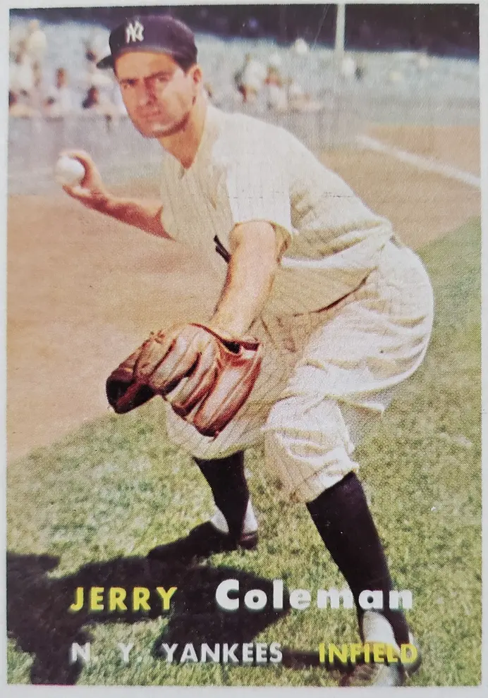

Jerry Coleman "The Colonel"
Career Highlights & Facts
(Facts are AI-generated and may require verification)
- Served as a combat pilot in 2 major global conflicts.
- Earned recognition as the most valuable player of a championship series.
- Received a prestigious award for excellence in broadcasting after a playing career.
Would you like to find out more about Jerry Coleman?
Player Biography
Jerry Coleman
January 4, 2012
/
in
BioProject - Person
Ford C. Frick Award
1950s All-Stars
Broadcasters
,
Managers
San Diego Padres 50th Anniversary
/
by
admin
This article was written by
C. Paul Rogers III
Jerry Coleman was a true American war hero who played a little baseball for the New York Yankees during the times the Marines did not demand his services. He was the only major-league ballplayer to see combat in both World War II and the Korean Conflict.
1
And he saw more than just a little combat as a fighter pilot in both wars, flying 57 missions in a dive bomber in World War II and 63 missions in a fighter plane in Korea. For his service he was awarded two Distinguished Flying Crosses in addition to 13 Air Medals and three Navy Citations.
2
Altogether Coleman spent nearly five years in the Marines and sandwiched in a nine-year big-league career with the Yankees that was plagued by injuries around his service in Korea. When healthy he was a fine ballplayer, graceful and acrobatic at second base and a dangerous slash hitter.
3
He was the Associated Press American League Rookie of the Year in 1949 but his best year was 1950, when he hit .287 and was named the MVP of the World Series.
4
After retiring from his playing career at the age of 33, Coleman went on to become a Hall of Fame broadcaster, first for the Yankees and then for more than 40 years for the San Diego Padres.
Gerald Francis Coleman was born on September 14, 1924, in San Jose, California, the second of two children of the former Pearl Beaudoin and Gerald Griffin Coleman. His sister, Rosemarie, was born two years earlier. Although the children were born in San Jose, the family lived in San Francisco. Their father was a backup catcher in the Pacific Coast League for a couple of years and continued to play semipro baseball while working as a bank teller.
5
But as Coleman related in his memoirs, his and his sister’s childhoods were anything but idyllic. Their father had a drinking problem and was verbally and physically abusive. Their mother left him when Jerry was about 8 years old, taking the children with her. Shortly thereafter, Jerry’s father shot his estranged wife three or four times as she came out of a dance. Pearl was seriously injured and was in the hospital for about nine months as her children went to live with relatives and her husband left town. Her husband was apparently never prosecuted, although the shooting made front-page news.
6
Jerry and his sister were reunited with their mother when she finally got out of the hospital. Pearl had permanent injuries; her left elbow would not bend and for the rest of her life she had to wear a brace on her left leg to be able to walk. She was unable to work and with two children was forced to go on welfare. Meanwhile, Jerry’s father moved back to San Francisco after a couple of years. Pearl had divorced him in the interval, but he had gotten a steady job with the post office and so she actually remarried him so that he would provide for the family. Fortunately for Jerry and his sister, their father worked the 4 P.M.-to-midnight shift so they seldom saw him.
7
As Jerry grew up he began to play a lot of sandlot baseball in Golden Gate Park. He was also a good basketball player and his athletic prowess got him admitted to the prestigious Lowell High School in San Francisco.
8
There he played basketball and baseball and as a senior made All-City in the former sport, setting a city single-game scoring record with 23 points against Commerce High on March 8, 1942.
9
While in high school he began to play for the Keneally Yankees, the premier semipro baseball team in the Bay Area.
10
There his teammates included future New York Yankees teammates
Bobby Brown
and
Charlie Silvera
as well as future major leaguers
Bill Wight
and
Dino Restelli
.
11
During Coleman’s senior year in high school, the Brooklyn Dodgers offered him a $2,500 bonus to sign after a tryout camp, but Jerry’s mother wanted him to go to college, so he accepted a combined basketball/baseball scholarship to USC.
12
December 7, 1941, right in the middle of Coleman’s senior year, changed all that. In March he heard a presentation at his high school about the Navy’s V-5 flight-training program from two naval aviators and immediately decided that he wanted to become a Navy fighter pilot. Although he graduated from high school in June 1942, he would not turn 18 until that September.
Joe Devine
, a Yankees scout who had followed him during his high-school years and who had recruited him to play for the Keneally Yankees, offered him $2,800 to sign with the Yankees organization and Coleman accepted since he was not yet old enough to enlist.
The Yankees assigned him to Wellsville, New York, of the Class D PONY (Pennsylvania, Ontario, New York) League, where two of his teammates were CharlieSilvera and Bob Cherry, both of whom had also been teammates in the San Francisco sandlots. Hampered initially by a cut finger from an uncovered fan, Coleman struck out his first six times at bat. Eventually he found his swing and batted .304 for the season in 83 games and 289 at-bats while shifting between shortstop and third base. A Wellsville groundskeeper worked with him before games to develop a hit-and-run stroke that he used his entire career. Although Coleman didn’t know who he was, he turned out to be
Chief Bender
, one of the greatest pitchers of the early twentieth century.
13
When the season ended Coleman returned to San Francisco and was accepted into the Navy’s V-5 flight training program. He was first assigned to train at Adams State College in Alamosa, Colorado, where he first soloed. He subsequently trained at St. Mary’s University in California; Olathe, Kansas; and Corpus Christi, Texas, where he decided to become a Marine pilot. Coleman was commissioned as a second lieutenant in the Marine Corps on April 1, 1944.
14
From there he was assigned to Jacksonville, Florida, where he learned to fly the SBD, also known as the Dauntless dive bomber. He wanted to fly dive bombers because they had the potential to sink aircraft carriers.
15
After short stints in Cherry Point, North Carolina, and the Miramar Naval Air Station in California, Coleman was sent to Guadalcanal in a troopship on which he joined a squadron known as the Torrid Turtles.
16
Guadalcanal was by then a staging area and Coleman flew raids from Green Island to the Solomon Islands. Later he transferred to the Philippines, where he flew raids to Luzon and other Japanese-held strongholds. While there he was able to play a little baseball and basketball during down times.
Coleman was sent back to San Francisco in July 1945 after flying 57 combat missions, because he was qualified to fly off aircraft carriers. After a leave, he was to be assigned to an aircraft carrier to prepare for the invasion of the Japanese mainland. But the Japanese surrendered in August, so Coleman was reassigned to Cherry Point, North Carolina, before his discharge in January 1946.
17
After missing three seasons because of his war duty, Coleman, still only 21 years old, returned to professional baseball for the 1946 season. The Yankees promoted him to the Binghamton Triplets in the Eastern League where he played under the legendary
Lefty Gomez
. There he batted a solid .275 in 134 games and 487 at-bats, earning a brief late-season call-up to the Kansas City Blues in the American Association. Shortly after the season, Coleman married Louise Leighton, who had also graduated from Lowell High in San Francisco. The couple had two children, Diane and Jerry Jr., before divorcing in 1980.
18
Coleman stuck with Kansas City in 1947 and batted .278 in over 500 plate appearances while playing shortstop and third base under manager
Billy Meyer
.
19
That performance earned him an invitation to the Yankees’ 1948 spring training, where he was the last man cut by New York manager
Bucky Harris
.
20
The Yankees sent him to the Newark Bears of the International League to learn how to play second base as a potential replacement for
George “Snuffy” Stirnweiss
on the parent club.
21
He ended up playing a lot of shortstop and third base as well and saw his average slip to .251 in 562 plate appearances.
Even so, the Yankees called Coleman up for the last couple of weeks of the season, although he did not appear in a game. The time he spent on the bench proved beneficial, however, because he quickly figured out that as a 160-pound right-handed hitter, he was not going to be able to hit home runs in
Yankee Stadium
.
Bill Skiff
, his manager with Newark, had urged him to learn to bunt and to exercise better bat control. And with the Yankees Coleman noticed that his old semipro teammate Bobby Brown choked up on the bat and had much better bat control than he did, so he decided to follow suit.
22
Coleman had forced himself to learn to smoke when he was overseas but Skiff told him that with his slight build, smoking was sapping his strength. Coleman related in his memoir that he quit immediately and never smoked another cigarette.
23
He made the Yankees out of spring training in 1949 as a 24-year-old rookie, set to back up Stirnweiss at second base. When Stirnweiss got spiked on Opening Day, Coleman found himself starting at second and leading off the second day of the season in Yankee Stadium against the Washington Senators. The first ball hit to him went right between his legs for an error, but, after a popup, he started a double play when
Buddy Lewis
hit a one-hopper to him.
24
Coleman grounded out to shortstop
Sam Dente
to first baseman
Eddie Robinson
in his first at-bat, leading off the bottom of the first against
Paul Calvert
, and went 0-for-4 on the day on four groundouts as the Yankees won 3-0. He got his first big-league hit leading off the next day, singling to left field off
Forrest Thompson
in another Yankees win.
With his first hit out of the way, Coleman went off on a hot streak and on April 26, his seventh game, had a 4-for-4 day against the Philadelphia Athletics, including his first major-league home run, off
Alex Kellner
, a two-run shot to left in the eighth inning that won the game for the Yankees, 5-4.
25
That game increased his batting average to .417. Yankees coach
Frankie Crosetti
worked with Coleman on the hit-and-run, bunting, and bat control and he hovered around .300 for much of the season, although he was out at one stretch because of a sinus condition.
26
Coleman finished his rookie season with a .275 batting average in 128 games and 523 plate appearances. He led American League second basemen in fielding percentage and teamed with shortstop
Phil Rizzuto
to quickly become the top keystone combo in the league.
The 1949 pennant race went down to the final game of the season with the Yankees and Red Sox tied for the league lead and playing at Yankee Stadium. The Yankees led 1-0 heading into the bottom of the eighth when
Tommy Henrich
’s leadoff home run off
Mel Parnell
made it 2-0. The Yankees then loaded the bases against
Tex Hughson
with two out, which brought Coleman to the plate. He fought off a high inside fastball and hit it on the trademark just beyond the reach of second baseman
Bobby Doerr
and hard-charging right fielder
Al Zarilla
inside the line for a bases-clearing double to make the score 5-0. The drama wasn’t over, however, as the Red Sox rallied for three runs before
Vic Raschi
was able to retire the side and secure the pennant.
27
The Yankees went on to defeat the Brooklyn Dodgers in the World Series in five games, with Coleman playing all five and batting .250 with three doubles and four runs batted in. After the season he was named the American League Rookie of the Year by the Associated Press.
For many years Coleman was apologetic about his dying swan double
28
against the Red Sox until he ran into former Yankees manager
Joe McCarthy
at a banquet. “You swung at it, didn’t you?” McCarthy said, meaning that he put the ball in play and didn’t strike out.
29
Many years later, Coleman visited
Ted Williams
in the hospital in San Diego. Williams was recovering from a serious stroke and had trouble speaking. But the first thing he said when he saw Coleman enter his hospital room was, “That f—–g hit you got,” a very clear reference to Coleman’s bloop double some 40 years before.
30
Coleman had his career year in the 1950 season that followed. He got off to another blazing start and was still batting above .290 when he was named to the American League All-Star team for the midsummer classic. For the season he played in all but one game and batted .287 with a career-high 69 RBIs. The Yankees won their second straight pennant and then swept the Philadelphia Phillies, known as the Whiz Kids because of their youth, in four straight low-scoring games in the World Series. Coleman continued his timely postseason hitting, driving in Bobby Brown with a fourth-inning fly ball for the only run of a Game One 1-0 Yankees victory. Coleman had three hits in Game Three, including a walk-off single to left-center off
Russ Meyer
that fell between
Richie Ashburn
and
Jack Mayo
and scored
Gene Woodling
with the winning run in a 3-2 win. For his efforts, Coleman was named the MVP of the Series. The Yankees scored only 11 runs in the Series, but Coleman knocked in three of them, including two game-winners.
With the Korean Conflict going full tilt, Coleman knew that he was subject to recall by the Marines. After World War II, officers were not discharged but simply put on reserve or inactive status, meaning that they could be recalled to active duty. And Coleman realized that it was much more efficient for the military to recall trained fighter pilots than to train new ones.
31
Uncle Sam did not call Coleman that winter and he was able to play the entire 1951 season, batting .249 in 121 games, as rookies
Gil McDougald
and
Billy Martin
pushed for playing time on the infield. The Yankees won their third consecutive pennant, by five games over the Cleveland Indians. During the World Series, won by the Yankees over the New York Giants in six games, Coleman shared second base with McDougald and went 2-for-8.
After the season, Coleman embarked on a two-month tour of US military bases in Europe that was organized by the commissioner’s office. He was joined by
Stan Musial
,
Jim Konstanty
,
Frankie Frisch
,
Charlie Grimm
,
Elmer Valo
,
Steve O’Neill
,
Dizzy Trout
, and two umpires. He knew his recall by the Marines was imminent, but he did manage to play the first two weeks of the 1952 season and appear on the
Ed Sullivan Show
before reporting for duty at the Los Alamitos Naval Air Station in early May. In 11 games before his recall, he batted .405 in 47 plate appearances.
32
Once he regained his flying skills at Los Alamitos, Coleman was transferred to the El Toro Marine Station, also in California, to learn to fly Corsair attack planes.
33
He went into action in Korea in late January 1953. Over the next four months Coleman flew 63 combat missions, had two near-death experiences, and saw Max Harper, his tentmate and close friend, shot down and killed by antiaircraft fire right in front of him.
34
The physical and emotional toll of those experiences was enough to get Coleman grounded and he finished his tour of duty performing intelligence work from the front of the DMZ.
35
Coleman was discharged in time to return to the Yankees by mid-September of 1953 as his team was on its way to its fifth consecutive pennant and world championship.
36
Coleman made eight mostly token appearances and was not on the World Series roster.
37
He was ready for spring training in 1954 but found that the pressure and fatigue he had experienced in Korea had affected his depth perception and thus his batting eye.
38
Although still only 29 years old, Coleman struggled the entire season and batted only .217 in 107 games.
The 1955 season was even worse for Coleman, although he became the player representative for the Yankees in spring training. In the first week of the season, he was caught in a rundown between third base and home and tried to plow over Red Sox shortstop
Owen Friend
in front of the plate. Friend dodged and Coleman landed on his left shoulder instead, shattering it. Surgery would have meant missing the rest of the year, so Dr. Sidney Gaynor, the Yankees’ orthopedist, manipulated the bones back in place and put a large plaster cast over his left shoulder and arm to immobilize it.
39
Coleman returned to action on July 19, but in his first game back was beaned in
Comiskey Park
by
Harry Byrd
, a White Sox reliever. Fortunately, Coleman was wearing a batting helmet, still not mandatory in 1955, but he still suffered a serious concussion that landed him in the hospital for two days and kept him out of the lineup for over a week.
40
For the season, he appeared in only 43 games, mostly at shortstop and third base, and hit .229 in 112 plate appearances. The Yankees won the AL pennant and then lost the World Series in seven games to the Brooklyn Dodgers, their longtime rival. Coleman got into three games as a pinch-runner and defensive replacement, going 0-for-3 at the plate.
Almost immediately after the season, the Yankees embarked on a six-week tour of Hawaii, Japan, and the Philippines, playing exhibition games against local competition. When they played a game in Hiroshima, they were among the first group of Americans to visit there since World War II.
Although Coleman had the reputation of being a very smart, heady ballplayer, he occasionally supplied some comic relief. His Yankees teammate
Eddie Robinson
remembered the first time southpaw pitcher
Bill Wight
started a game for the Baltimore Orioles against the Yankees in Yankee Stadium after being out of the American League for a while. Coleman had played with Wight in the sandlots in San Francisco and before the game went around telling his teammates that Wight had a great pickoff move. He said, “You’ve got to be very careful. If you just take your foot off the base, he’ll pick you off.” Coleman then got on first base in his first at-bat and Wight promptly picked him off.
41
Coleman was among several interchangeable infielders in 1956 for manager
Casey Stengel
and shared time at second base, third base, and shortstop with Billy Martin, Gil McDougald, and
Andy Carey
after Phil Rizzuto was released. He batted .257 in 80 games and 203 plate appearances as the Yankees won their seventh American League pennant in eight years. They went on to reclaim the world championship in seven games against the Dodgers but Coleman played in only two of those.
The following year, 1957, would be Coleman’s last as a player. He appeared in 72 games, mostly in a utility role, and batted a solid .268 in 180 plate appearances. The Yankees comfortably won their eighth pennant in nine years by eight games over the Chicago White Sox. This time they faced the Milwaukee Braves in the World Series and lost in seven games as former Yankees farmhand
Lew Burdette
won three games and pitched two shutouts against his former organization. Coleman started all seven games at second base and batted .364 for the Series, the highest on the team. He singled against Burdette in the ninth inning of Game Seven, in what was the last at-bat of his career.
Coleman’s lifetime batting average for nine big-league seasons is .263 with a .340 on-base percentage. Although he hit only 16 home runs in his career, he struck out only 218 times in 2,415 plate appearances. Casey Stengel, never one to lavish praise, said of Coleman, “Best man I ever saw on a double play. Once I seen him make a throw while standing on his head. He just goes ‘Whish!’ and he’s got the feller at first.”
42
He became so proficient at the double play that “it almost seemed the ball would ricochet in and out of his glove without actually touching it.” Overall, he played second base “with grace and style.”
43
Although Coleman’s playing career was over at the age of 33, his baseball journey was just beginning. Even with his great World Series in 1957, Coleman understood that he was headed for a backup role to incoming second baseman
Bobby Richardson
and was afraid of being traded and having to uproot his family.
44
Thus, when Yankees General Manager
George Weiss
offered him a job as director of player personnel, Coleman jumped at it. His responsibility was to work with the Yankees’ scouts and provide players for all the Yankees farm teams except their top team in Richmond, Virginia.
45
Coleman aspired to eventually become the general manager of a big-league team, but his travel as personnel director had him away from home the majority of the time and was difficult because of his young family.
46
In 1960 he left to go to work in promotions and marketing for the Van Heusen Shirt Company, a position he obtained at the behest of his friend Howard Cosell.
47
He had been offered a broadcasting job with CBS Television by Bill MacPhail right after he retired as a player, but he turned it down because he had just taken the front-office job with the Yankees.
48
But in 1960 MacPhail again offered Coleman the opportunity to get into broadcasting by conducting pregame interviews on CBS’s
Game of the Week
and doing occasional game broadcasts when
Dizzy Dean
and
Pee Wee Reese
, the regular broadcasters, were not available. Since the CBS games were only on the weekends, he was able to keep his position with Van Heusen. He was completely ill-prepared for the job
49
and recalled that his first pregame interview was with future Hall of Famer
Red Schoendienst
who saved him from disaster by talking nonstop for five minutes or so after Coleman asked, “How’s it going, Red?”
50
Coleman’s inexperience also showed early on when he was interviewing Washington Senators manager
Cookie Lavagetto
during a pregame show. The National Anthem began and Coleman, unaided by his director, continued with the interview, thinking that perhaps the audience could not hear the anthem. Although CBS received a number of letters in protest, as Coleman recalled, “My military background saved me.”
51
He must have improved rapidly because in 1963, after his third year with CBS, Ballantine Beer, which sponsored the Yankees telecasts, invited Coleman to join the Yankees broadcast team. He accepted, resigned from Van Heusen and CBS, and joined the Yankees for spring training in March. He was the newest member of the Yankees legendary broadcast team of
Red Barber
,
Mel Allen
, and Phil Rizzuto, his old keystone partner.
52
The first season he broadcast only road games because Barber was not traveling and typically would broadcast half the home games on radio and half on television.
53
Barber took Coleman under his wing and became a mentor, for example telling him not to guess on the air but to make sure what he said was “right.”
54
Coleman broadcast the Yankees games for seven years and worked with
Joe Garagiola
after the team fired Barber. During that period, in 1967 he traveled to Vietnam to visit troops with
Joe DiMaggio
,
Pete Rose
, and
Tony Conigliaro
.
55
By 1970 his wife very much wanted to move back to the West Coast and Coleman hoped to get a job broadcasting for the expansion San Diego Padres. The team did not have an opening and so Coleman took a sports broadcasting job with KTLA-TV in Los Angeles.
56
There he alternated doing the nightly sports news with Tom Harmon, the former Heisman Trophy winner at Michigan, who was also a decorated World War II pilot.
Howard Cosell helped Coleman also get a job doing weekend sports shorts for the ABC radio network. Then, in 1972,
Buzzie Bavasi
, the Padres’ president, offered Coleman a broadcasting job and he snapped it up.
57
It was a job he held, with the exception of one year, until he died 42 years later. In the mid-1970s he also began broadcasting CBS Radio’s
Game of the Week
and did so for 22 years.
That exception was 1980, the year Coleman served as manager of the Padres. He and Bob Fontaine, the Padres general manager, had grown up together. After the Padres finished 68-93 in 1979, Fontaine persuaded Coleman to succeed
Roger Craig
as manager. Coleman received a three-year contract for a total of $200,000 with the understanding that he could return to the broadcast booth if the managing stint did not work out.
58
Unhappily for all concerned, it did not. The club started the season with a promising 22-19 record but then went into a nosedive. The club owner fired Bob Fontaine shortly before the All-Star break and replaced him with
Jack McKeon
, who had been the assistant general manager. Although the everyday lineup featured
Dave Winfield
and
Ozzie Smith
and had great team speed with three players stealing 50 or more bases, the club struggled getting on base. The Padres also had
Rollie Fingers
in the bullpen, but the staff was overall mediocre. The team finished last in its division with a 73-89 record, 2½ games behind the fifth-place Giants, and, during the final week of the season, Coleman was told that he would not be coming back as manager.
59
After his season as manager, Coleman did return to the broadcast booth with the Padres. He also remarried in October 1981, marrying the former Maggie Hay. He was 57 and she was 31 and the couple had a daughter named Chelsea in 1985.
60
Coleman gravitated to broadcasting mostly on radio because he enjoyed describing the action for the fans. He juggled broadcasting the Saturday
Game of the Week
on CBS radio with Padres games until 1997, taking red-eyes and early-morning flights to get back for Sunday Padres games.
61
Over the years Coleman became so popular that he was almost an iconic figure in San Diego. He became known as “The Colonel” on radio broadcasts and around
Petco Park
since he had retired from the Marines as a lieutenant colonel. Broadcasting highlights were when the Padres went to the World Series in 1984 and 1998.
62
He sometimes remarked, however, that he, because of the Padres habitually weak teams, had broadcast more losing games than anyone in history.
63
Coleman became known for his “rich and intimate” but concise delivery
64
and developed two trademark calls with the Padres. When a Padres player made a great defensive play, Coleman would say, “Hang a star on that one, baby!” During home games, Coleman would then hang a two-foot-wide gold star out the broadcast booth on a broomstick. Radio station KFMB broadcast the Padres games and at one point gave out “Hang a star on that one” membership cards to fans. His other call “Oh, doctor!” was first used by Red Barber. Coleman related that it just came out of his mouth once early during his time with the Padres and he continued to use it when something extraordinary occurred on the field.
65
Coleman was also known for his malapropisms on the air, which came to be called “Colemanisms.” Perhaps the best known is when he described Dave Winfield going back for a long fly ball. Coleman allegedly said, “Winfield goes back. He hit his head against the wall. It’s rolling back toward the infield.”
On another occasion, he reputedly described a double by saying, “He slid into second with a stand-up double.”
Then there was the time that he noted that “
Gaylord Perry
and
Willie McCovey
should know each other like a book. They’ve been ex-teammates for years.”
He reportedly said, “
George Hendrick
simply lost that sun-blown popup.”
He once introduced the starting pitcher by saying “On the mound is
Randy Jones
, the left-hander with the Karl Marx hairdo.”
66
Padres President Buzzie Bavasi once said, “I made some good acquisitions here …
Nate Colbert
,
Cito Gaston
, Dave Winfield,
Randy Jones
, Rollie Fingers, Ozzie Smith. But the best acquisition I made for this town was Jerry Coleman.”
67
Coleman was universally respected and admired within baseball.
Jeff Torborg
, who worked with him for several years on CBS Radio, said, “I don’t think I’ve ever heard anyone say anything negative about Jerry.” He was also unfailingly humble and self-deprecating. Joe Garagiola remembered an occasion when Coleman was conducting a pregame interview with an infielder and asked the player how he made the double play. Afterward Garagiola told Coleman, “You asking him how to do a double play is like the pope asking somebody how to say Mass. You did it better than anybody.”
68
In 2005 Coleman was honored by the Baseball Hall of Fame in Cooperstown, receiving the
Ford C. Frick
Award for excellence in baseball broadcasting. That same year he was inducted into the Marine Sports Hall of Fame; along the way he was also inducted into the National Radio Hall of Fame, the San Diego Padres Hall of Fame, and the Bay Area Sports Hall of Fame. In 2012 the Padres honored Coleman by unveiling a statue outside Petco Park of him in his Marine aviator uniform.
Jerry Coleman died on January 5, 2014, from complications after a fall.
69
He was laid to rest with full military honors including a 21-gun salute and an F-18 flyover in the missing-man formation. At his death, Coleman was 89 years old and had led a remarkable life, starting with a very difficult childhood. He became a bona-fide war hero in two wars, had a baseball playing career that earned him Rookie of the Year and World Series MVP honors, and then transitioned into a Hall of Fame broadcasting career. Through it all, he remained a very humble man with a great sense of humor and an appreciation for his good fortune in surviving two wars and for his ability to play major-league baseball. Jerry Coleman was not only a San Diego treasure, but an American treasure.
Notes
1
Ted Williams was also a fighter pilot who famously served in both World War II and Korea but Williams saw combat only in Korea.
2
Dan Daniel, “Quiet Coleman Speaks Out With His Bat,”
The Sporting News
, October 18, 1950: 3.
3
Peter Golenbock,
Dynasty — the New York Yankees 1949-1964
(New York: Prentice-Hall, Inc., 1975), 53.
4
“Gerry, Don — Top Rookies,”
New York World-Telegram
, November 4, 1949.
Roy Sievers
of the St. Louis Browns was voted Rookie of the Year by Baseball Writers Association of America, with Coleman finishing third in that vote. The official designation of the World Series MVP was not instituted by the major leagues until 1955, but the BBWAA voted Coleman the Babe Ruth Award as its Most Valuable Player in the 1950 World Series. As a result, most authorities have recognized Coleman as the MVP of that Series. See, e.g., George Vecsey, “Jerry Coleman, 89, Yankee Infielder, Fighter Pilot and Voice of the Padres,”
New York Times
, January 6, 2014: A15.
5
Jerry Coleman with Richard Goldstein,
An American Journey — My Life On the Field, In the Air, and On the Air
(Chicago: Triumph Books, 2008), 14-15.
6
Coleman, 15-16.
7
Coleman, 17-18.
8
Graduates of Lowell include Supreme Court Justice Stephen Breyer, California Governor Pat Brown, actress Carol Channing, author J.D. Salinger, and sculptor Alexander Calder. Coleman, 20.
9
Coleman, 27.
10
According to Coleman, the team was sponsored by the Keneally Bar in San Francisco which was owned by a guy who never drank. Josh Board and Joe Hight, “The Man Who Hung the Stars,”
San Diego Reader
, April 7, 2005: 30. The bar owner was Neil Keneally. The team had been called the Keneally Seals but Keneally renamed the team the Keneally Yankees in honor of New York Yankees scout Joe Devine, who later signed Coleman. Bob Stevens, “This Is Jerry Coleman,”
Baseball Digest
, January 1950: 4.
11
Coleman, 27-28; Stevens: 4.
12
Coleman, 29.
13
Bender had apparently been given a job by George Weiss, general manager of the Yankees. Although Coleman was a willing student, Bender shortly disappeared, and Coleman never saw him again. Coleman, 31-33.
14
Coleman, 37-38.
15
Todd Anton,
No Greater Love — Life Stories from the Men Who Saved Baseball
(Burlington, Massachusetts: Rounder Books, 2007), 93-94; Todd Anton and Bill Nowlin, eds.,
When Baseball Went to War
(Chicago: Triumph Books, 2008), 80. Bob Cherry, who had played with Coleman in San Francisco and in Wellsville, went through pilot training with him and also chose the Marines. Coleman, 39.
16
Board and Hight: 30.
17
Coleman, 41-49; Anton, 94-96.
18
Sadly, Louise battled alcoholism much of her life and committed suicide with a drug overdose in 1982. Coleman, 149-150.
19
After the season, Coleman went to see a doctor to see what he could do about his weight loss and thus strength loss during the long season. He was a teetotaler until the doctor told him to drink two beers a day to help him maintain body fluids. Coleman, 57. Coleman later related that he hated beer and that the last one he ever drank was after his last game in 1957. Anton, 97-98.
20
According to Coleman, it seemed as if he was always the last man cut. Board and Hight: 31.
21
Coleman, 56-57.
22
Coleman, 57-59; Stevens, 5.
23
Coleman gave Skiff a lot of credit for getting him to the big leagues and possibly saving his life by telling him to stop smoking. Coleman, 61. David Halberstam,
Summer of ’49
(New York: William Morrow & Co., 1989), 39-40.
24
Coleman, 65-66. About the error, Coleman was quoted as saying, “My first big league play and I booted it like the rankest busher. I could hear the train whistle back to Newark right then.” Stevens, 6. See also “Keystone Kid of the Champs — Jerry Coleman,”
Sport Life
, August 1949: 53.
25
“I was walking on clouds that night.” Stevens, 7.
26
Coleman, 68-71; “Keystone Kid of the Champs,” 90.
27
Coleman, 87-88.
28
In 1950 Coleman was quoted as saying, “It was embarrassing to hit a ball like that. I just hit it off my hands. Disgusting little blooper. … It was a shamefully weak hit.” Stevens, 8.
29
Coleman, 92; Halberstam, 249; Dom Forker,
The Men of Autumn: An Oral History of the 1949-53 World Champion New York Yankees
(Dallas: Taylor Publishing Co., 1989), 202.
30
Interview with Bobby Brown, June 25, 2018.
31
Coleman, 98.
32
Coleman often joked that he was the first .400 hitter since Ted Williams in 1941. Coleman, 105.
33
Fellow major leaguers Ted Williams and
Lloyd Merriman
were also recalled to Korea to fly fighter planes and teammate Bobby Brown, by now a medical doctor, was recalled, serving in a MASH Unit and later in a military hospital in Japan.
34
On one occasion Coleman’s was the last plane coming in for a landing after a successful raid. The control tower became confused, however, and gave clearance for a wounded Sabrejet from another airfield to land at the same time. The two pilots saw each other at the tip of the runway and the Sabrejet pilot gunned his engine, missing Coleman’s plane by inches. The Sabrejet pilot crashed and was killed. Just two weeks later Coleman’s engine conked out during takeoff when his Corsair was loaded with 3,000 pounds of bombs. As he tried to brake, he released the bombs which fortunately did not detonate. However, one of the bombs caught his tail wheel and flipped the plane upside down. Coleman ended up upside down inside the cockpit with his arms pinned to his side and his safety harness choking him. By the time the emergency crew reached him, he had passed out and was blue in the face. Coleman, 113-114. Coleman remembered thinking, “What a way to die, at least I could be right side up.” Phil Rizzuto with Tom Horton,
The October 12 — Five Years of New York Yankee Glory, 1949-1953
(New York: Forge, 1994), 111.
35
Coleman, 109-117.
36
George Weiss of the Yankees knew that Coleman was near the end of his tour and tried to hasten Coleman’s return from Korea so that he could join the Yankees late in the season. Coleman, 117-118; Anton, 105, 106; Nowlin & Anton, 85-86.
37
Because he appeared in a few games in both 1952 and 1953, Coleman was one of 12 players to play in the Yankees’ run of five straight world championships. In the mid-’50s the Yankees had a commemorative plaque made of those five straight world championships and gave one to each of the 12 players. When interviewed in the early ’90s Coleman was told that he was the only one of the 12 not to have the plaque on display. Coleman, who lived in LaJolla, California, and had a great view of the Pacific Ocean from his house, responded, “If you can’t feel good when you pick up the paper and look out over the Pacific Ocean, coming back into the house and seeing pictures of yourself in baggy pinstripes is not going to help you feel any better.” Rizzuto with Horton, 111.
38
Coleman, 122-123; Jim G. Lucas, “Coleman: A Real Bomber,”
New York World Telegram Saturday Magazine
, July 11, 1953; Forker,
The Men of Autumn
, 204.
39
Coleman, 123; Dan Daniel, “Coleman Injury Hits Yanks Hopes to Trade for Top-Flight Hurler,”
New York World Telegram and Sun
, April 23, 1955.
40
Coleman had been hit behind the left ear in 1947 without a helmet while playing for the Kansas City Blues and reported that it affected his equilibrium for weeks, so he always wore a helmet when they became available. Coleman, 123-124.
41
Eddie Robinson and C. Paul Rogers III,
Lucky Me: My Sixty-Five Years in Baseball
(Dallas: SMU Press, 2011), 110.
42
Arthur Daley, “Sports of The Times/Return of a Hero,”
New York Times
, August 24, 1953; Carlos DeVito,
Scooter: The Biography of Phil Rizzuto
(Chicago: Triumph Books, 2010), 176.
43
Coleman was also a fastidious dresser, including the way in which he wore his uniform, and that coupled with his smooth and acrobatic play at second base earned him the nickname “Fancy Dan.” Golenbock, 53.
44
Several teams including the Boston Red Sox were reportedly interested in acquiring Coleman when he retired. Dan Daniel, “Class Always His Top Trait,”
New York World Telegram
, January 11, 1958. Bobby Richardson later recalled that during his rookie year Coleman would show up early and work with him at second base, even though Richardson was trying to take his job. He said, “I owe a lot to Jerry Coleman.” Dom Forker,
Sweet Seasons: Recollections of the 1955-1964 New York Yankees
(Dallas: Taylor Publishing Co., 1990), 3.
45
Coleman, 147.
46
Golenbock, 272-273 (describing long hours working for George Weiss).
47
Brian Jensen,
Where Have All Our Yankees Gone?
(Lanham, Maryland: Taylor Trade Publishing, 2004), 63-64.
48
Coleman had gotten to know MacPhail when he played for the Kansas City Blues and MacPhail was the traveling secretary for the team. He subsequently went into the broadcasting business. Coleman, 153.
49
Curt Smith,
The Storytellers
(New York: Macmillan, 1995), 45-47. (Coleman describing his first broadcasting experience).
50
Coleman, 153-154; Joe Vella, “Coleman Recounts Fun of Games,”
Oneonta Star
, August 11, 2005.
51
Coleman, 154; Curt Smith,
Voices of Summer
(New York: Carroll & Graf, 2005); Smith,
The Storytellers
, 119.
52
According to Coleman, initially “Scooter [Rizzuto] and I were kids who had a wonderful time but [were] maybe not as professional as you’d like.” Smith,
The Storytellers
, 47. See also DeVito, 225,226.
53
Coleman, 161-163.
54
Coleman, 165-166.
55
Coleman, 170-171.
56
He, through Pat Summerall, apparently turned down a job to become President of the Oakland Seals hockey team. Jensen, 65.
57
Coleman, 175.
58
Coleman, 191-192.
59
Coleman, 197-199.
60
Coleman, 203-205.
61
Coleman, 156.
62
According to Coleman, his most memorable game as a broadcaster was Game Four of the NLDS when the Padres had to defeat the Cubs to force a fifth game and
Steve Garvey
hit a ninth-inning two-run home run to win for the Padres 7-5.
See
Smith,
The Storytellers
, 171, for Coleman’s call of Garvey’s home run.
63
Jensen, 67.
64
Baseball broadcast historian Curt Smith described Coleman’s play-by-play as “rich and intimate; he was the bearer of a clean meticulous story line.” Curt Smith,
Voices of the
Game (South Bend: Diamond Communications, 1987), 370.
65
Coleman, 176.
66
A more complete list of “Colemanisms” is at
funny2.com/coleman.htm
. and Smith,
Voices of the Game,
370-371.
See also
Smith,
The Storytellers
, 73, 101, 109, 117-118.
67
Board and Hight: 42.
68
Jay Posner, “Hang a Star on Mr. C,”
San Diego Union-Tribune
, July 31, 2005.
69
Vecsey: A15.
Full Name
Gerald Francis Coleman
Born
September 14, 1924 at San Jose, CA (USA)
Died
January 5, 2014 at La Jolla, CA (USA)
Tags
Ford C. Frick Award
·
1950s All-Stars
·
Broadcasters
·
Managers
·
San Diego Padres 50th Anniversary
Career Totals
| WAR | AB | H | HR | BA | R | RBI | SB | OBP | SLG | OPS | OPS+ |
|---|---|---|---|---|---|---|---|---|---|---|---|
| 6.5 | 2119 | 558 | 16 | .263 | 267 | 217 | 22 | .340 | .339 | .680 | 83 |
Statistics via Baseball-Reference.com
The Original Clue